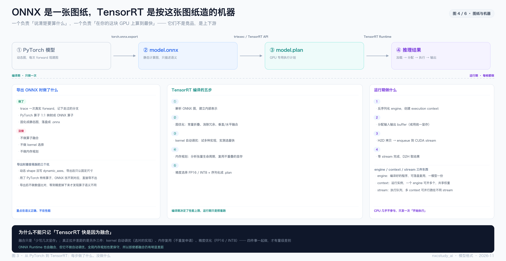
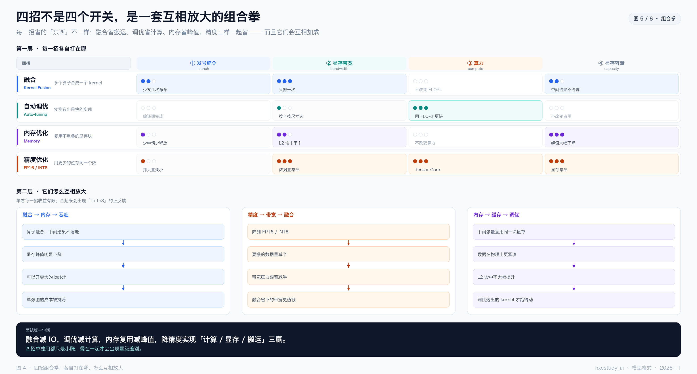
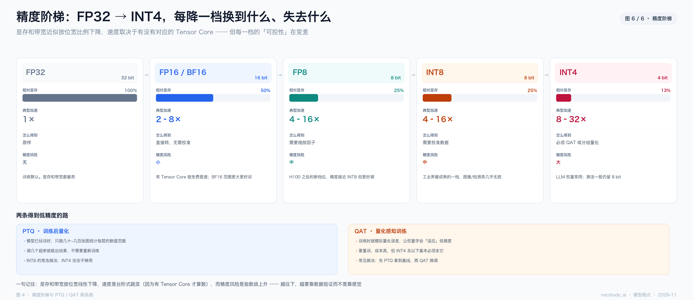

| 图 | 回答的问题 | 一句话结论 |
|---|---|---|
| 图 1 | 为什么慢 | 三堵墙：发号施令、显存带宽、算力 |
| 图 2 | 有哪几条路 | 五条路，差别在「谁在编译期做优化」 |
| 图 3 | 后端到底有哪些 | 四族：NVIDIA / 跨平台 / 端侧 / LLM |
| 图 4 | ONNX 与 TensorRT 什么关系 | 一张图纸，和按图纸造的机器 |
| 图 5 | TensorRT 的四招怎么分工 | 各打一处，但会互相放大 |
| 图 6 | 精度能降到多低 | FP32 → INT4，显存线性降、风险指数升 |
-图N-标题 区分。
新手最先卡住的不是技术，是名词混用。这四组不分开，后面全是雾。
| 词 | 是什么 | 不是什么 |
|---|---|---|
| 格式 | 一个文件，描述「要算什么」 | 不是引擎，自己不跑 |
| 引擎（Runtime） | 一个程序，负责真的把算完 | 不是编译器，多数不做深度优化 |
| 编译器 | 离线工具，把图变成机器码 | 不是运行时，跑起来是另一段代码 |
| 精度 | 数字用几位存 | 不是压缩算法，是表示方式 |
.pt ──导出──▶ .onnx ──编译──▶ TensorRT ──序列化──▶ .plan ──加载──▶ Runtime
（格式） （编译器） （格式） （引擎）
① 发号施令：GPU 算得比 CPU 发命令快，kernel 小时大半时间在等。
② 显存带宽：中间结果反复写回显存，带宽先打满——最常见的瓶颈。
③ 算力：FLOPs 就那么多，只能换硬件或降精度。
先看 GPU 利用率 ──低──▶ 撞的是 ①
高 ──▶ 再量 DRAM 带宽 ──满──▶ 撞的是 ②
没满 ──▶ 最后看算力 ──满──▶ 撞的是 ③
顺序反了的代价：在 ① 的问题上花三天做量化，然后发现一点没变快。
同一份 .pt，可以走五条完全不同的路。差别不在格式，在「谁替你在编译期做优化、做得多狠」。
| 路线 | 做什么 | 产物 | 推理后端 | 代价 |
|---|---|---|---|---|
| A 保持 PyTorch | 只换执行方式，torch.compile | 进程内产物 | PyTorch ATen + cuDNN / Inductor | 首次编译慢；多变会重编译 |
| B 通用格式 | 导出 ONNX，交给 ORT | model.onnx | ONNX Runtime（+ EP 插件） | 优化保守，只拿一部分收益 |
| C 专用引擎 | ONNX → TensorRT 编译 | model.plan | TensorRT | 绑死 GPU 型号与 TRT 版本 |
| D 硬件生态 | 各家 SDK | .rknn / .mlmodel | RKNN / CoreML / TFLite / NCNN | 算子覆盖不全，常要改结构 |
| E 大模型专用 | vLLM / TRT-LLM / SGLang | 服务化引擎 | vLLM / SGLang / TensorRT-LLM | 面向吞吐，不是单条延迟 |
两点补充：
五条路里说的「产物」只是格式；真正把 kernel 跑起来的是后端。把后端补齐，这张表才完整。
按生态分成四族，记住四族比背名字有用：NVIDIA 专属（PyTorch 原生 + Inductor + TensorRT）、跨平台通用（ORT / OpenVINO / TVM / XLA）、端侧（ExecuTorch / NCNN / MNN / TFLite / CoreML / RKNN / QNN）、LLM 运行时（vLLM / SGLang / TensorRT-LLM / llama.cpp）。
① 格式 ≠ 后端。一个 .onnx 能被 ORT、TensorRT、OpenVINO、TVM 同时读。「用了 ONNX」完全不能说明快慢——要看它被谁读。
② EP 是插件。ONNX Runtime 的「执行提供器」本质是把别的后端接进来：CUDA EP 走 cuDNN、TensorRT EP 直接调 TRT、OpenVINO EP 调 Intel、QNN 走高通 NPU。换 EP 就换硬件，模型一行不用改——这是 ORT 最大的价值。
③ 服务层不是后端。Triton / TorchServe / KServe 只管排队和路由，真正算的还是下面那层。后端决定「多快」，服务层决定「同时服务多少个」。
它是一张有向无环图：节点是算子（Conv、MatMul、Add），边是 tensor，文件本质是 protobuf。它只做一件事——跨框架交换。
做的事情：trace 一次真实 forward → PyTorch 算子 1:1 映射成 ONNX 算子 → 固化成静态图落盘。
不做：算子融合、kernel 选择、内存规划。导出器的目标是语义正确，不是性能。
ONNX 是文件格式；ONNX Runtime 是执行引擎。混为一谈，就会问出「我用了 ONNX 为什么还是没变快」——因为你只换了格式，还没接引擎。
差的不是融合，是三件事：kernel 自动调优、全局内存规划、精度优化。ORT 走 cuDNN/cuBLAS 的通用路径，TensorRT 走 NVIDIA 为每代 GPU 调过的路径。
见第 05、06 节——四招各有分工，融合只是其中之一。
先让模型在 PyTorch 里跑对
→ 再导出 ONNX 并做数值比对
→ 最后才上 TensorRT 调优

原笔记那句话值得抄下来：
| 阶段 | 做什么 | 频率 |
|---|---|---|
| 编译期 | 解析 → 图优化 → kernel 选择 → 内存规划 → 序列化 | 一次 |
| 运行期 | 反序列化 → 建 context → 分配 buffer → enqueue → 取结果 | 每帧 |
关键认知：性能上限在编译期就定了，运行期只是照着跑。所以「推理慢」八成要在编译阶段解决，而不是在运行时代码里加优化。
多路视频流推理时，通常就是「一个 engine + 多个 context + 多个 stream」。

| 招 | 省的是 | 打在哪 | 一句话 |
|---|---|---|---|
| 融合 | 搬运（IO） | ② 带宽 | 多个算子合成一个 kernel，只搬一次 |
| 自动调优 | 计算 | ③ 算力 | 无数种实现里，实测选出最快的那个 |
| 内存优化 | 峰值显存 + L2 命中 | ④ 容量 / ② 带宽 | 生命周期不重叠的中间张量共用一块 |
| 精度优化 | 计算 + 显存 + 搬运 | ②③④ 全中 | 位宽减半，三样一起省 |
注意最后一行的形状：前三招各打一个点，精度一打就是三个。这就是为什么量化经常是性价比最高的一步。
① 算得快 ── Tensor Core 对 FP16 的吞吐是 FP32 的 2–8 倍 ② 省显存 ── 32 位变 16 位，显存直接减半，能塞更大模型 ③ 搬得快 ── 要搬的字节数减半，同样带宽，时间直接减半
三项叠加，正好覆盖三堵墙里的两堵（②带宽、③算力）加一个容量（④）。它同时打三处，而其他三招各打一处——这就是单点收益最大的原因。
单独看每一招，收益经常只有 10–20%；叠起来才会出现量级差别。有三条正反馈在起作用。
| 反馈 | 链条 |
|---|---|
| 融合 → 内存 → 吞吐 | 中间结果不落地 → 显存峰值↓ → 能开更大 batch → 单张成本被摊薄 |
| 精度 → 带宽 → 融合 | 数据量减半 → 带宽压力减半 → 融合省下的那部分带宽相对更值钱 |
| 内存 → 缓存 → 调优 | 显存复用 → 布局更紧凑 → L2 命中↑ → 调优选出的 kernel 才真跑得动 |
反过来看更清楚：没有内存优化，融合了的算子也可能因显存不够而频繁换入换出；没有精度优化，调优再好也会被庞大的数据搬运量拖住。

两个关键点：显存和带宽按位宽线性下降，但速度是台阶式跳变（必须有对应 Tensor Core 才算数）；精度风险是指数级上升的。FP16 几乎无损；INT8 在图像/检测类通常掉不到 1 个点；INT4 基本必须靠 QAT 或分组量化。
| PTQ（训练后量化） | QAT（量化感知训练） | |
|---|---|---|
| 做法 | 跑几十~几百张图统计每层范围 | 训练时就模拟量化误差 |
| 成本 | 低，调几个超参 | 高，要重训 |
| 适用 | INT8 的常态做法 | INT4 及以下基本必须 |
| 路径 | 先 PTQ 拿基线 → 掉点明显再 QAT 微调 | |
前面都在「编译期」做文章。还有一类技术，动的是运行期怎么发命令、怎么排队。
| 技术 | 在做什么 | 限制 |
|---|---|---|
| CUDA Graph | 把一串 kernel 启动「录」下来，一键重放 | 必须静态形状、无分支 |
| 连续批处理 | 请求不等整批做完，完成的就走、新的就进 | 需要调度器支持 |
| PagedAttention | KV cache 按页分配，像虚拟内存一样 | LLM 专用 |
| 前缀缓存 | 相同 prompt 前缀的 KV 复用 | 要识别公共前缀 |
CUDA Graph 值得单独说：它经常被当成「TensorRT 的一部分」，其实不是——它是 TRT 的可选插件，也是 torch.compile(mode="reduce-overhead") 的内部机制。限制很硬：输入形状固定、不能有 if/else、第一次要预热录制。
能用一张卡 + 量化解决的，别上并行。并行的通信开销经常吃掉一半收益。真要切，张量并行切层内矩阵（通信量最大，要 NVLink）、流水并行切层（有气泡）、MoE 切专家（路由复杂）。
按你的处境走，不用背表。
模型还在改 / 还在调结构 └─▶ A：torch.compile。别急着上 TensorRT —— 改一次模型要重编一次 已定版、NVIDIA GPU、追低延迟 └─▶ C：ONNX → TensorRT。先跑 FP16，掉点可接受就停 部署在 CPU / x86 服务器 └─▶ B：ONNX Runtime 或 OpenVINO。先确认算子被支持，再谈量化 部署在手机 / 车机 / 开发板 └─▶ D：先看芯片厂商给什么 SDK，先核对算子清单 LLM 在线服务、关心吞吐 └─▶ E：vLLM 起步，追极致上 TensorRT-LLM。先分清 prefill 慢还是 decode 慢 只想训练/调试快一点 └─▶ A：torch.compile，一行搞定
一条经验：先做「能跑通」，再做「更快」。大部分团队卡在第一步（算子不支持、数值对不上），而不是第二步。
| # | 误区 | 实际 |
|---|---|---|
| 1 | ONNX 是推理引擎 | 它只是图格式，不执行 |
| 2 | 导出 ONNX 会自动优化 | 1:1 映射，只保语义正确 |
| 3 | TensorRT 快是因为融合 | 融合只是一项，还有调优/内存/精度 |
| 4 | ORT 和 TensorRT 差不多 | 缺自动调优与全局内存规划，差距明显 |
| 5 | FP16 一定更快 | 没有 Tensor Core 或不在瓶颈时，可能没变化 |
| 6 | INT8 一定掉很多点 | 图像/检测类通常 < 1 个点，要实测 |
| 7 | engine 可以跨卡复用 | 绑死 GPU 型号 + TRT 版本 |
| 8 | CUDA Graph 万能 | 必须静态形状，动态分支录不了 |
| 9 | batch 越大越好 | 用延迟换吞吐，实时场景要克制 |
| 10 | 融合越多越好 | 过度融合可能挡住并行、影响数值 |
| 11 | 量化完不用验证 | 必须跑评测集比对，否则是赌博 |
| 12 | 加速就是「换个格式」 | 是编译 + 运行时 + 精度三件事一起 |
| 缩写 | 全称 | 一句话 |
|---|---|---|
| IR | Intermediate Representation | 中间表示，一张计算图 |
| ONNX | Open Neural Network Exchange | 开放的计算图交换格式（protobuf） |
| ORT | ONNX Runtime | 微软的执行引擎，靠 EP 插件接后端 |
| EP | Execution Provider | ORT 的后端插件（CUDA / TRT / OpenVINO） |
| TRT | TensorRT | NVIDIA 的推理编译器 + 运行时 |
| engine / plan | — | TRT 编译产物，一段 GPU 专用机器码 |
| fusion | 算子融合 | 多个算子合成一个 kernel |
| PTQ | Post-Training Quantization | 训练后量化，要校准数据 |
| QAT | Quantization-Aware Training | 量化感知训练，要重训 |
| PagedAttention | — | KV cache 按页管理，像虚拟内存 |
本文是「总图」，其余是「放大镜」：
2026-06-ONNX与TensorRT推理加速（第 04–05 节原始版） |
2026-09-PyTorch执行原理与torch.compile-CUDA-Graph-TensorRT（第 08 节） |
2026-09-量化核心公式与按需反量化（第 07 节） |
2026-06-state_dict与模型保存加载（第 01 节） |
2026-09-动态模型并行与KV缓存冲突（并行部分）
1 诊断先于开药：先判断撞的是哪堵墙，再决定用哪个工具。
2 格式不等于加速：换 ONNX 不产生速度，产生速度的是编译器的四件事。
3 能跑通比跑得快重要：90% 的时间花在算子不支持与数值对不上。